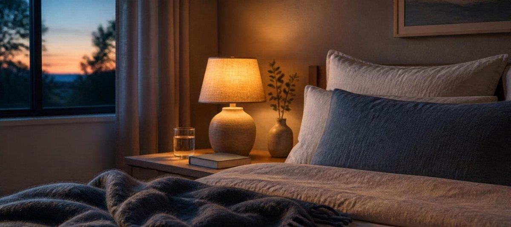
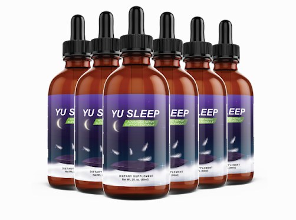

Home / Restful Sleep / Article
Restful Sleep
7 Simple Habits for Better Sleep After 50
Small changes to your day and evening that add up to calmer, deeper nights.

Sleep often changes as we get older. Many people find they fall asleep later, wake more often in the night or get up before they'd like. The good news is that a few steady habits make a real difference, and none of them cost much.
1. Get up at the same time every day
Your body clock likes routine. Getting up at the same time every morning, weekends included, helps you feel sleepy at the right time at night. If you've had a poor night, resist the urge to sleep in; an early night the next day works better.
2. Step outside in the morning
Ten to twenty minutes of daylight soon after you wake tells your body that the day has started. A short walk, coffee on the porch or a few minutes in the garden all count, even on a cloudy day.
3. Keep afternoons light on caffeine
Coffee, black tea and many soft drinks can stay in your system well into the evening. Try switching to decaf or herbal tea after lunch and notice whether you settle more easily at night.
4. Make the bedroom cool, dark and quiet
A slightly cool room, heavy curtains and a little steady background sound, like a fan, help light sleepers stay asleep. Move the clock so you can't see it from the pillow; checking the time keeps the mind busy.
5. Build a wind-down hour
The hour before bed sets the tone. Dim the lights, put the phone away, and choose something calm: a book, gentle stretching, a warm shower or a few minutes of prayer or reflection. The same routine each night becomes a signal to your body that sleep is coming.
6. Keep naps short and early
A short nap of 20 to 30 minutes before mid-afternoon can refresh you. Longer or later naps often make it harder to fall asleep at night.
7. Go easy on late meals and nightcaps
A heavy meal close to bedtime can keep your stomach working when you want to rest. Alcohol may make you drowsy at first, but it tends to cause lighter, broken sleep later in the night.
If you'd like extra support
Some people like to add a natural sleep supplement to their evening routine once these habits are in place.

Yu SleepYu Sleep is a supplement designed for adults who want to support more restful sleep.Read our Yu Sleep guide →Whatever you try, give it a couple of weeks along with the habits above, and notice how your mornings feel.